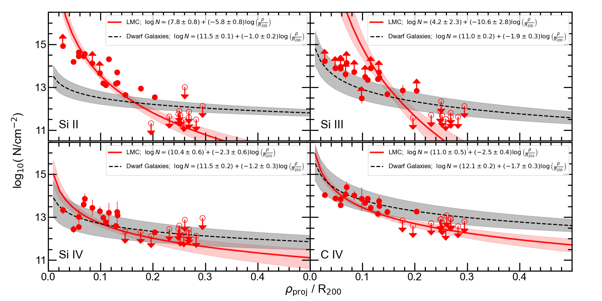

The Truncated Circumgalactic Medium of the Large Magellanic Cloud
The Large Magellanic Cloud (LMC) is the nearest massive galaxy to the Milky Way (MW). Its circumgalactic medium (CGM) is complex and multiphase, containing both stripped H I structures like the Magellanic Stream and Bridge and a diffuse warm corona seen in high-ion absorption. We analyze 28 active galactic nucleus sight lines passing within 35 kpc of the LMC with archival Hubble Space Telescope/Cosmic Origins Spectrograph spectra to characterize the cool (T = 104 K) gas in the LMC CGM, via new measurements of UV absorption in six low ions (O I, Fe II, Si II, Al II, S II, and Ni II) and one intermediate ion (Si III). We show that a declining column-density profile is present in all seven ions, with the low-ion profiles having a steeper slope than the high-ion profiles in C IV and Si IV reported by D. Krishnarao et al. Crucially, absorption at the LMC systemic velocity is only detected (in all ions) out to 17 kpc. Beyond this distance, the gas has a lower velocity and is associated with the Magellanic Stream. These results demonstrate that the LMC's CGM is composed of two distinct components: a compact inner halo extending to 17 kpc and a more extended stripped region associated with the Stream. The compactness and truncation of the LMC's inner CGM agree with recent simulations of ram-pressure stripping of the LMC by the MW's extended corona.
